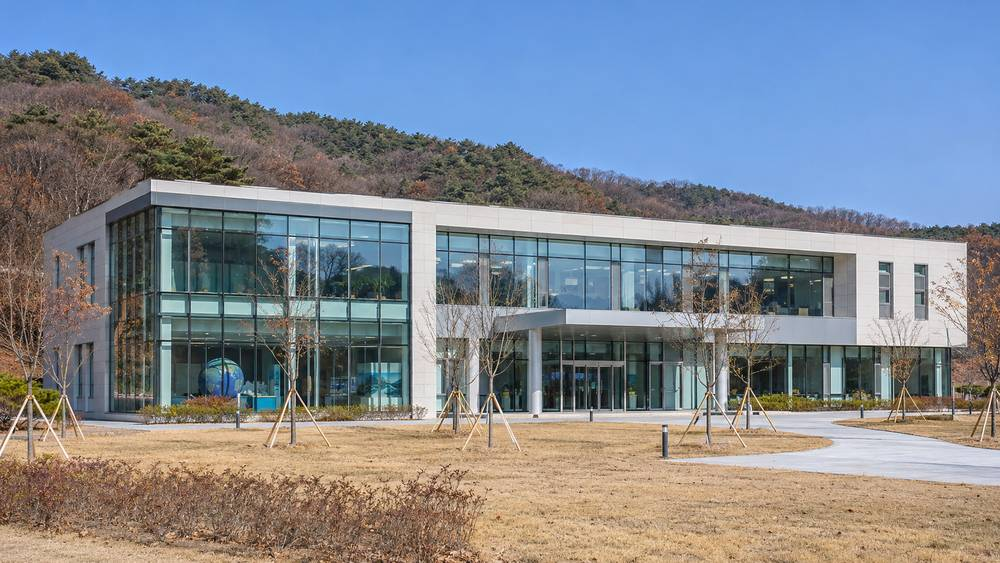

강원 기후변화 대응 복합센터 춘천에 개관, 한국기후변화연구원은 9월 먼저 입주

총사업비 175억 원 중 105억 원은 한강수계관리기금…연면적 3,154㎡에 기후변화도서관·창업보육·연구시설 / 2025년 3월 착공, 2026년 8월 말 건축공사 마쳐
강원특별자치도가 춘천시 동내면 신촌리에 지은 「기후변화 대응 복합센터」의 준공·개관식을 11월 18일 열고 운영에 들어간다고 밝혔다. 센터는 도유지 9,371㎡에 지하 1층·지상 2층, 연면적 3,154㎡ 규모로 교육·전시·체험·홍보시설과 기후변화도서관, 창업보육 공간, 연구시설을 갖췄다. 총사업비 175억 원 가운데 105억 원은 기후에너지환경부 한강수계관리기금, 70억 원은 도비다.
한국기후변화연구원(2008년 법인 설립)은 9월 1일 이미 이 건물로 옮겼으며, 도는 연구 기능에 교육·전시·체험 프로그램을 단계적으로 더한다. 센터는 2021년 한강수계관리위원회 친환경 청정사업 지원 대상으로 뽑혀 2025년 3월 착공했고, 2026년 8월 말 건축공사를 마쳤다.
시민에너지 관점
센터가 맡겠다는 일은 기후테크 창업 지원과 연구, 교육·전시다. 그러나 강원에서 기후 대응이 주민 살림과 가장 가까이 닿는 곳은 재생에너지 이익이며, 태백 가덕산 풍력에서 도가 받은 누적 배당이 119억여 원에 이른다는 사실(본지 [강원 시군 바람소득](1085))은 공공과 주민이 지분을 가질 때 무엇이 지역에 남는지 보여 준다. 175억 원을 들인 센터가 도의 기후 싱크탱크를 자처한다면, 시군 바람소득·햇빛소득 사업의 지분 설계와 주민 투자 모델을 연구하고 알리는 일을 첫 과제로 삼아야 한다.
출처: 강원특별자치도 2026-11-18 보도자료 「강원특별자치도, 기후변화 대응 복합센터 준공·개관」(에너지정책과 기후변화대책팀, 붙임 행사계획·건립사업 안내) 원문 보기
출처: 한국기후변화연구원 2026-08-20 공지 「한국기후변화연구원 사무실 이전」 원문 보기
출처: 한국기후변화연구원 열람 2026-11-18 연구원 연혁 원문 보기